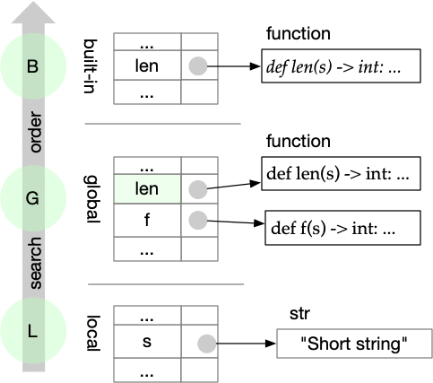
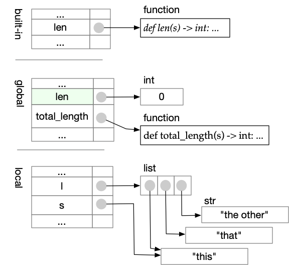
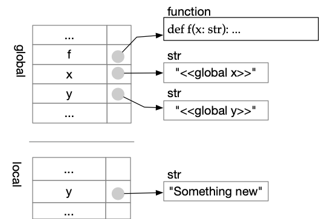
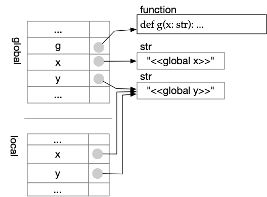
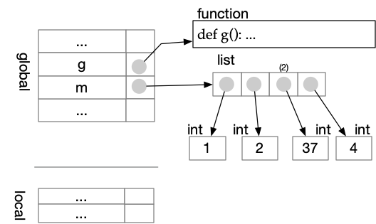
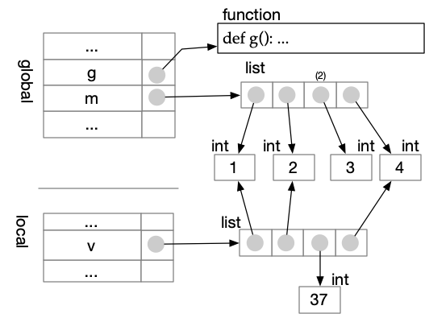
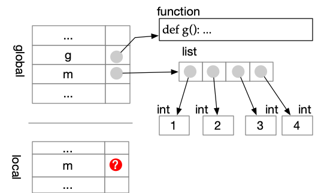

Scopes#
If we have a variable x, that variable may
exist in more than one namespace. Some of these namespaces are
in stack frames, created when a function is called. Python
searches namespaces in a
particular order, which determines which x it finds.
Python always searches in this order:
The local scope. This is the namespace in the top stack frame, which generally corresponds to the function that is currently executing. If a function is not executing (e.g., you are executing code within a source file that is not part of any function), then the local scope will be the namespace of the module (see below).
The enclosing scope. Later you may find it useful to define functions within other functions. For now the enclosing scope will be the same as the global scope.
The global scope. This is a namespace of the module (source file) of the code that is currently executing. It is where our functions and global variables live.
The builtin scope. This is a namespace for the builtin functions (and some other things) that are always available in Python. For example, when you type
len("abc"), Python usually findslenin the builtin scope.
This is called LEGB resolution order. To remember it, imagine that a football player’s dominant leg is “leg A”, and their other leg is “leg B”. A skilled football (soccer) player must practice kicking with leg B.
When a name exists in more than one of these scopes, Python uses the name it finds first. We say the other occurrences of the name are shadowed, i.e., covered up and hidden. For example:
# Shadow the built-in len function
def len(s: str) -> int:
"""Don't do this. Avoid shadowing built-ins!"""
return 21
def f(s: str) -> int:
return 2 * len(s)
print(f("Short string"))
42
Python looks first in the local namespace, but does not find len.
There is no enclosing namespace, so it next looks in the global
namespace, and finds function len defined in this module. It does
not look farther, so it uses the len function defined in this
module instead of the built-in len function.

It can be hard to remember and avoid all the built-in names. Try as I may to avoid it, I often accidentally shadow a built-in function with a variable. This can lead to confusing error messages.
len = 0 # Oops
def total_length(l: list[str]) -> int:
"""Total length of all the strings in l"""
tot = 0
for s in l:
tot += len(s)
return tot
print(total_length(["this", "that", "the other"]))
---------------------------------------------------------------------------
TypeError Traceback (most recent call last)
Input In [2], in <cell line: 0>()
7 tot += len(s)
8 return tot
---> 10 print(total_length(["this", "that", "the other"]))
Input In [2], in total_length(l)
5 tot = 0
6 for s in l:
----> 7 tot += len(s)
8 return tot
TypeError: 'int' object is not callable

When Python complains that some type is “not callable”, it is a strong clue that we have accidentally shadowed a function with a variable.
Which variables are local?#
Since a function can use both global variables and local variables, how can we tell which is which? If we assign a value to a variable (bind it) anywhere in a function, Python will create a variable with that name in the local scope of the function. If we use the variable but do not bind it within the function, Python will not create a local variable, so it will find a global variable instead. In other words, the local variables of a function are the variables that are bound within the function.
x = "<<global x>>"
y = "<<global y>>"
def f():
"""Access both local and global variables"""
y = "Something new" # y is bound here!
print(f"The value of x is '{x}' while executing f")
print(f"The value of y is '{y}' while executing f")
print(f"x is '{x}', y is '{y}' before calling f()")
print("======== Calling f ========")
f()
print("======== After call to f ====")
print(f"x is '{x}', y is '{y}' after calling f")
x is '<<global x>>', y is '<<global y>>' before calling f()
======== Calling f ========
The value of x is '<<global x>>' while executing f
The value of y is 'Something new' while executing f
======== After call to f ====
x is '<<global x>>', y is '<<global y>>' after calling f

Binding y within f makes y a local variable
throughout f, even before the assignment that binds it. Notice
what happens if we move the assignment after the print statements:
x = "<<global x>>"
y = "<<global y>>"
def f():
"""Access both local and global variables"""
# assignment to y has not been made yet
print(f"The value of x is '{x}' while executing f")
print(f"The value of y is '{y}' while executing f")
y = "Something new" # y is bound here!
print(f"x is '{x}', y is '{y}' before calling f()")
print("======== Calling f ========")
f()
print("======== After call to f ====")
print(f"x is '{x}', y is '{y}' after calling f")
x is '<<global x>>', y is '<<global y>>' before calling f()
======== Calling f ========
The value of x is '<<global x>>' while executing f
---------------------------------------------------------------------------
UnboundLocalError Traceback (most recent call last)
Input In [4], in <cell line: 0>()
11 print(f"x is '{x}', y is '{y}' before calling f()")
12 print("======== Calling f ========")
---> 13 f()
14 print("======== After call to f ====")
15 print(f"x is '{x}', y is '{y}' after calling f")
Input In [4], in f()
6 # assignment to y has not been made yet
7 print(f"The value of x is '{x}' while executing f")
----> 8 print(f"The value of y is '{y}' while executing f")
9 y = "Something new"
UnboundLocalError: cannot access local variable 'y' where it is not associated with a value
Formal arguments are local variables#
When we call a function f, we bind the values of actual
arguments to the formal arguments of f. These bindings create
local variables, just as if we had written an assignment statement
for each formal argument.
x = "<<global x>>"
y = "<<global y>>"
def g(x: str):
"""x will be bound by a call, and y by assignment,
so both x and y will be local variables.
"""
y = x
print(f"The value of x is '{x}' while g is executing")
print(f"The value of y is '{y}' while g is executing")
print(f"x is {x}, y is {y} before calling g(y)")
print("======== Calling g ========")
g(y)
print("======== After call to g ====")
print(f"x is '{x}', y is '{y}' after calling g(y)")
x is <<global x>>, y is <<global y>> before calling g(y)
======== Calling g ========
The value of x is '<<global y>>' while g is executing
The value of y is '<<global y>>' while g is executing
======== After call to g ====
x is '<<global x>>', y is '<<global y>>' after calling g(y)
Here x is made local by binding of the actual argument to a local
argument, and y is made local by binding in an assignment.
Although both x and y are local, they are both aliases of the
global y.

Modifying an element does not bind the collection#
It may seem that setting an element of a list or other collection is an “assignment to” a variable, but it does not make a new binding to the variable itself.
m = [1, 2, 3, 4]
def g():
"""This function does NOT bind m;
it only modifies an element of m.
"""
m[2] = 37
print(f"Within g the value of m is now {m}")
print(f"Before g() the value of m is {m}")
g()
print(f"After g() the value of m is {m}")
Before g() the value of m is [1, 2, 3, 4]
Within g the value of m is now [1, 2, 37, 4]
After g() the value of m is [1, 2, 37, 4]
This can be confusing, but it makes sense if you think about the way
Python executes m[2] = 37. First it finds m, then it finds
element 2 of m and changes that. m is still associated with
the same reference to the same list, unchanged. The value of m
has been modified, but the binding of m has not changed.

If we did not want to modify the global m within g, we could
avoid it by making a copy. Most collection types (list, dict,
and some others) have a copy method.
m = [1, 2, 3, 4]
def g():
"""This function binds v
to a copy of the global m.
"""
v = m.copy()
v[2] = 37
print(f"Within g the value of v is now {v}")
print(f"Within g the value of m is still {m}")
print(f"Before g() the value of m is {m}")
g()
print(f"After g() the value of m is {m}")
Before g() the value of m is [1, 2, 3, 4]
Within g the value of v is now [1, 2, 37, 4]
Within g the value of m is still [1, 2, 3, 4]
After g() the value of m is [1, 2, 3, 4]

What would happen if we tried to make a copy with m = m.copy()
instead of introducing a new variable v? It will not work!
Recall that binding a variable anywhere in a function makes it a
local variable everywhere in the function.
m = [1, 2, 3, 4]
def g():
"""This function binds attempts to bind
local m to a copy of global m, but it fails
because every reference to m is to the local m.
"""
m = m.copy()
m[2] = 37
print(f"Within g the value of m is now {m}")
g()
---------------------------------------------------------------------------
UnboundLocalError Traceback (most recent call last)
Input In [8], in <cell line: 0>()
9 m[2] = 37
10 print(f"Within g the value of m is now {m}")
---> 12 g()
Input In [8], in g()
3 def g():
4 """This function binds attempts to bind
5 local m to a copy of global m, but it fails
6 because every reference to m is to the local m.
7 """
----> 8 m = m.copy()
9 m[2] = 37
10 print(f"Within g the value of m is now {m}")
UnboundLocalError: cannot access local variable 'm' where it is not associated with a value
The local
m shadows the global m. Thus m = m.copy()
tries to make a copy of the local variable, which will fail because
the local variable hasn’t been given a value yet.

Recap#
The scope rules in Python are simple, but their consequences can be confusing. There are just two rules to remember:
Python searches for names in LEGB order, Local, Enclosing, Global, Built-in. (So far we have seen just LGM, but “LEG-B” is easier to pronounce and thus easier to remember.)
The Local variables of a function are those that have been bound through an explicit assignment or through argument passing.
Everything else follows from these two rules.